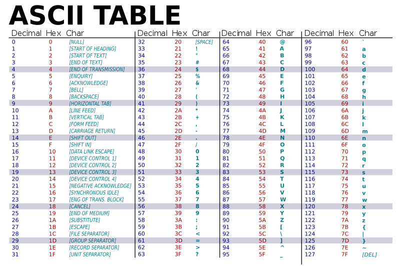
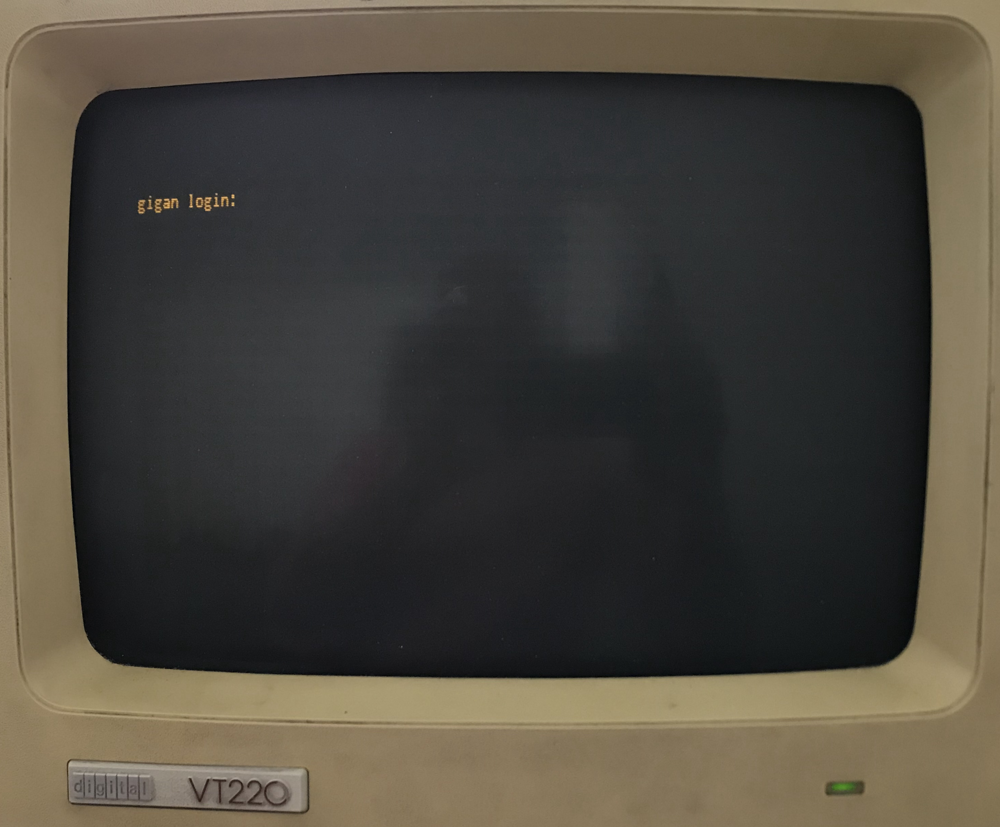

What is a Terminal and why do we still use them?
Contents
2. What is a Terminal and why do we still use them?¶
2.1. The origin story¶

{kind=link}
Originally when we started building computers they were very large. The main component, illustrated above, was a device which housed the “smart” parts, the CPU and MEMORY, that could run programs. We will discuss these parts and how they work in progressively more detail as the book goes along.

{kind=link}
For a human to work with the computer we had to attach a device that could both display output from the software running on the computer and accept input. The basic design was a terminal device that contained a video screen, keyboard and just enough smarts to communicate with the computer.
As we see computers originally did not have integrated hardware for humans to use – Eg. they did not have integrated screens, keyboards, mice, track pads, VR goggles, etc. Integrating, such human computer interface devices, only arose with advent of small personal computers (PC’s) designed and built largely for direct human use. That being said, there are still many computers today that do not have or need integrated human interface devices. These include the computers that power the Cloud or are integrated into other devices such as your wifi router.
{kind=link}
2.1.1. ASCII¶

{kind=link}
In particular, ASCII terminals know how to translate ASCII encoded text data to display, eg. “print”, the appropriate character on the screen. Eg if the software running on the computer sent the number 65 to the terminal, the terminal would display capital ‘A’ at the current “cursor” position. The terminal would also advance the cursor to the right so that the next encoded character sent would appear to the right of the last.
ASCII includes various values that encode punctuation including the critical space character to separate words. The ASCII code also includes values that move the cursor so that the software can control where on the screen characters would appear. Perhaps the most important of these is the LineFeed (‘\n’) value as it causes the cursor to go down one row to begin a new line.
In addition the screen terminals had a keyboard. These were built so that when a key was pressed on the keyboard the terminal would send the corresponding ASCII value to the computer. Each key is labeled with the ASCII symbol of the value that pressing it sends. This way software running on the computer could take text input from the user in addition to displaying it. Furthermore it was easy to have the software break the input into “words” and “lines” by having it scan for the ASCII values sent for Spaces and Line-Feeds, sent when the Spacebar and Return (or Enter) key were pressed.

Terminals were the “natural” evolution of the classic typewriter. Where its screen was like a virtual piece of paper that could be software controlled. As a matter of fact IBM was selling typewriters in 1924 well before it started exploring computers in 1940 IBM History.

{kind=link}
An operating system like UNIX was run on the computer and allowed many terminals to be connected to the computer. A user with an account on the computer could use the terminal and login to the computer. Students who needed to use the computer would have to go to such a “terminal room” to physically “connect” to the computer.

Specifically they would login with a username and password.
 The UNIX operating systems would check to see that the user was authorized and if so start a new terminal/shell session for the user. In particular, it started an instance of an ASCII oriented program called the shell which would allow the user to start working in the UNIX development environment – running existing programs and writing new ones (see section Shell for more details).
The UNIX operating systems would check to see that the user was authorized and if so start a new terminal/shell session for the user. In particular, it started an instance of an ASCII oriented program called the shell which would allow the user to start working in the UNIX development environment – running existing programs and writing new ones (see section Shell for more details).
2.2. Terminal Emulators¶
While the computers and terminals that we discussed above are relics of the past, UNIX and its development environment is still alive and thriving. It turns out that the simplicity of an ASCII terminal and the ASCII oriented programming tools of UNIX continue to power much of the digital world around us. Linux and other versions of UNIX run on every imaginable device today all the way from supercomputers to watches. And at some point or another, a programmer used terminal sessions communicating with the UNIX running on those devices to develop and debug the layers of software. While most people never see these layers of software, we rely on them to make those devices useful.

As we learn more about how software is constructed and how computers work, we will learn that the power of UNIX comes from making it very natural and easy for programmers to construct programs that can themselves be used to process and translate code.
Today we use “software” versions of terminals, called terminal emulators, to allow us to create connections to an operating system either running on the physical machine we are on or to other remote computers. Apple’s MacOSX is a UNIX derived operating system and includes a program called Terminal. Microsoft’s Windows OS is not a UNIX operating system but includes a similar program called Windows Terminal. Unlike the old days, since there is really no physical terminal device, a single user can start as many terminal sessions each within its own window as they like. As we will see later it is very useful to use multiple terminal sessions to organize your work. Additionally, both OSX and Windows provides a program called SSH. SSH allows you to use a terminal emulator running on your computer to connect to remote computers. Doing so is like connecting a terminal device to the remote computers you are using. The following discusses using ssh on windows Windows Terminal SSH and this one on using ssh on OS OSX Terminal SSH.
Recently, terminal emulators such as xterm.js have been developed that can be run within a web-browser. This allows us to develop web accessible development environments in which a user can create and use terminals all within a web-browser running on their local computer. This book has been written using Books with Jupyter which exploits Project Jupyter to allow pages of this book to provide the reader with access to a Unix computer via their web-browser.
Using the Rocket Icon (in the top right) you can can launch interactive versions of any chapter in this book and then create terminals to explore the material. Clicking on the “JupyterHub” drop down of the Rocket Icon will start a private Linux server (more accurately a Intel Linux Container) for your personal use. This server will automatically start the Jupyter environment which will serve the book’s content to your web-browser. This software, allows you to read and interact with the source material for chapters of the book and also allows you to create terminal sessions so that you can directly use the UNIX development tools installed on the computer via the xterm.js terminal emulators. This allows you the freedom to explore all the topics and material from within your web-browser. But please note there is nothing special about these terminals or the Linux system. Anything you learn can be directly applied to any Unix like system that you can establish a terminal connection too.

Please note if you use the interactive features of this book, the files you create within your Linux server are NOT PERMANENT! In other words you cannot rely on the files to be there the next time you access the server. If you want to save your work you will need to use an external service like GIT.
The following video demonstrates how you can use a page of the book to launch a Linux server and how to create terminal connections to this server from within your web-browser. You are encouraged to always have a terminal open when you read this book so you can try things out.
Life before the Terminal and the Revolution.
It might not seem obvious but the invention of the terminal was a very big deal in democratizing computer use and programming. If you are interested you can find more information about pre-terminal times here:
Computer programming in the punched card era, https://en.wikipedia.org/w/index.php?title=Computer_programming_in_the_punched_card_era&oldid=1031619768 (last visited Aug. 5, 2021).
Keypunch, https://en.wikipedia.org/w/index.php?title=Keypunch&oldid=1035986902 (last visited Aug. 5, 2021).
Punched card input/output, https://en.wikipedia.org/w/index.php?title=Punched_card_input/output&oldid=1029169887 (last visited Aug. 5, 2021).
IBM 1403, https://en.wikipedia.org/w/index.php?title=IBM_1403&oldid=1028926171 (last visited Aug. 5, 2021).
Prior to the terminal working with computers was more like offering prayers, written on stacks of special paper cards, to a priest who took them on your behalf to computer operators who the feed them to the computer. If all went well you would be able to pick up the output of the computer program, you requested to have run, in the form of a large paper print out. Not only where their many physical devices and steps in the process it took a very very long time between steps. In some sense using a computer required humans to adapt to the machine’s needs. Furthermore only a few trusted people were allows to have access to the actual computer. Writing new programs was an even more arcane skill that required incredible patience and discipline to work primarily on paper.
Terminals changed all of this. All of a sudden many users could gain “direct” access to programs running on a computer in a “fast” interactive way. Using a computer became more like having a conversation with the programs including the programs for writing new programs. This meant users could explore, experiment and learn how to write new programs themselves! One should never over look the power of having a good human interface.
Want to have some fun. Believe it or not we used to develop and play games on ASCII Terminals. If you want to get an idea what cost some people their degrees, or in some case got them their degrees, checkout Adventure, Rogue, Nethack, and Moria. We have included a version of Moria in the software of this book. To try it use the command
/usr/games/moriawithin a terminal.
2.3. Exercises¶
2.3.1. A terminal provides a text oriented way for a human to interact with a computer? (T/F)¶
True. A terminal allows software running on a computer to display ASCII encoded text data to a human and similarly allows a human to send ASCII encoded text to the computer for processing by software.
2.3.2. What would be displayed on an ASCII terminal if following byte values were sent to it (note the byte values are given in hexademical notation)? 0x48 0x65 0x6c 0x6c 0x6f 0x20 0x57 0x6f 0x72 0x6c 0x64 0x21¶
An ASCII terminal will translate each byte value displaying the following on its screen:
Hello World!
2.3.3. If the following keys where pressed on the keyboard of an ASCII terminal, in order (from left to right), byte values would be sent to the computer (values should be given in hexadecimal notation)? Nice :-)¶
0x4e0x690x630x650x200x3a0x2d0x29